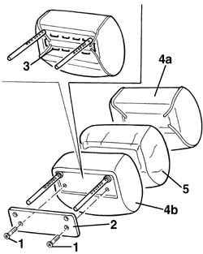
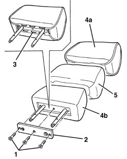

7050B14 HEAD RESTRAINT TRIM, left or right, for rear seat - R.R. with head restraint removed
- Path
- Procedures > 70 FITTINGS > 7050 REAR SEATS > 7050B rear seat head restraint/arm rest > 7050B14 HEAD RESTRAINT TRIM, left or right, for rear seat - R.R. with head restraint removed
- Kind
- repair procedure (removal / refitting; the operation number is the code)
- Applies to
- all engines; all production periods
- Interactive page
- https://sloeber94.github.io/elrnDB-a156/en/#/3238937
Applies to: all engines; all production periods
 Removing
Removing
 Refitting
Refitting1. Unscrew the bolts
2. Remove the protection.
3. Remove the steel tacks.
4. Prise up cover (4a) from padding (4b).
5. Recover the unwoven cloth protection.

Applies to: all engines; all production periods
Refitting
RemovingCheck that the cover is intact and shows no signs of damage.
Position the unwoven cloth protection on the padding.
Fit the padding cover and mould in place.
Apply the steel tacks.
Position the protection.
Tighten the screws.
Applies to: all engines; all production periods; only with equipment: Station Wagon
Removing
Refitting1. Unscrew the bolts.
2. Remove the protection.
3. Remove the steel tacks.
4. Prise up cover (4a) from padding (4b).
5. Recover the unwoven cloth protection.

Applies to: all engines; all production periods; only with equipment: Station Wagon
Refitting
RemovingCheck that the cover is intact and shows no signs of damage.
Position the unwoven cloth protection on the padding.
Fit the padding cover and mould in place.
Apply the steel tacks.
Position the protection.
Tighten the screws.